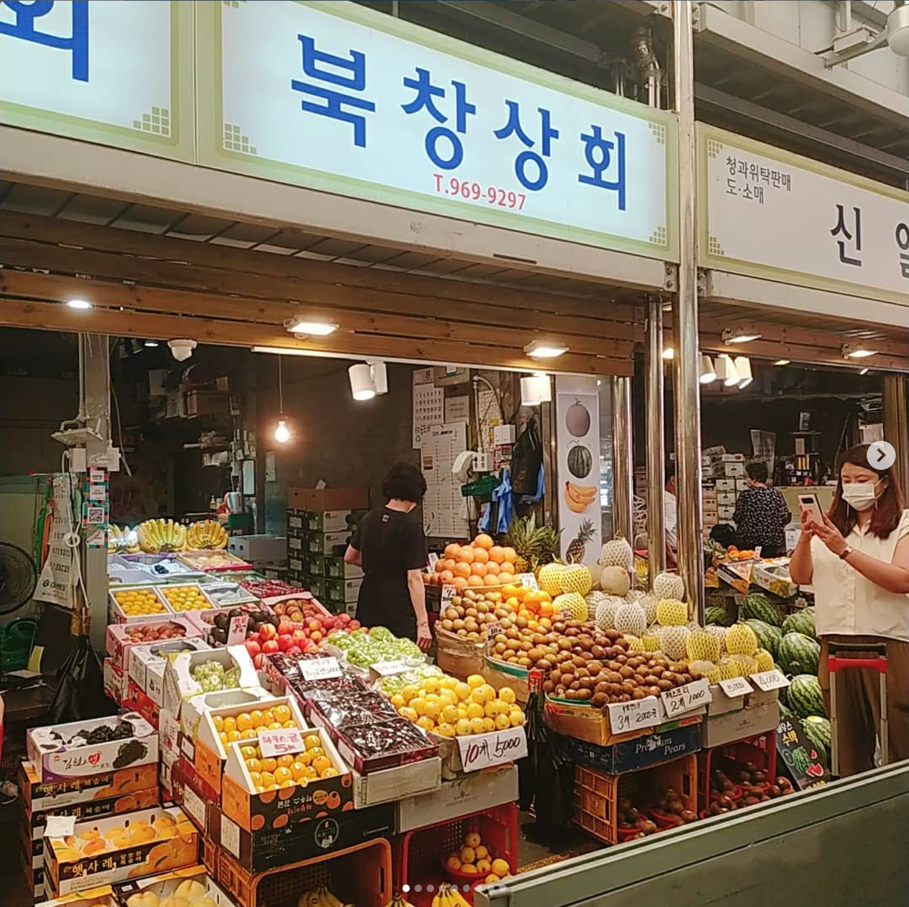
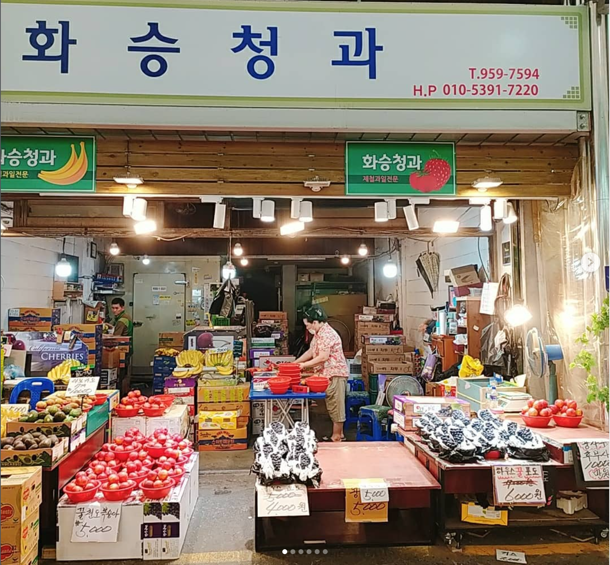
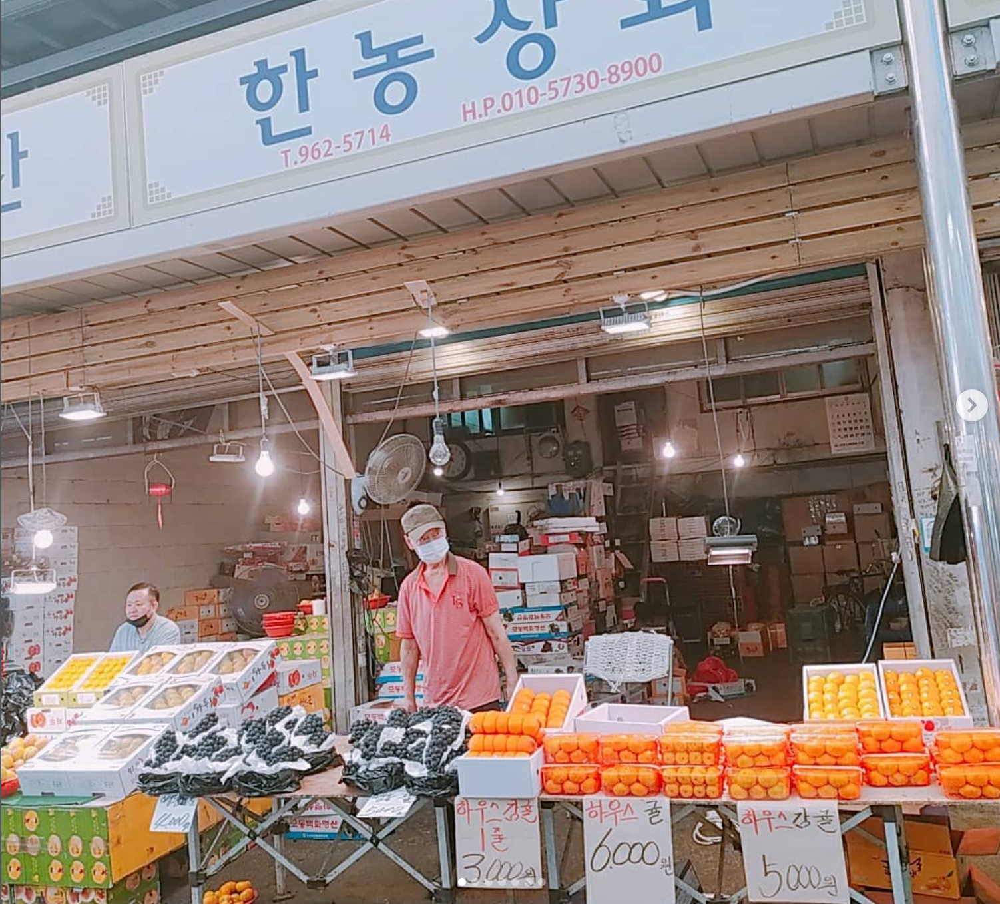

게시 보류북창상회
간판은 분명하지만, 보이는 가격표의 품목명이 가려지거나 매대와의 연결이 불명확합니다.
| 판독 내용 | 검증 |
|---|---|
| 10개 5,000원, 3개 20,000원 등 가격표 | 가격·단위 일부만 읽힘. 품목 연결 불가 |
현재 세션의 이미지 이해로 판독한 PoC 결과 · 사진의 촬영 시각·GPS가 없어 당일 시세로는 게시하지 않음

게시 보류간판은 분명하지만, 보이는 가격표의 품목명이 가려지거나 매대와의 연결이 불명확합니다.
| 판독 내용 | 검증 |
|---|---|
| 10개 5,000원, 3개 20,000원 등 가격표 | 가격·단위 일부만 읽힘. 품목 연결 불가 |

후보 통과점포 간판과 포도 매대, 가격표가 같은 프레임에 있어 귀속을 확인할 수 있습니다.
| 품목 | 가격 |
|---|---|
| 하우스 포도 세부 품종 표기는 불명확 | 6,000원 |

사진 매칭 통과간판, 감귤류 매대, 개별 가격표가 같은 프레임에 있습니다. 각 가격표는 좌·중앙·우측 바로 뒤의 매대와 대응합니다.
| 품목 표기와 매대 | 가격·단위 |
|---|---|
| 하우스 경봉 좌측 상자 매대 | 1판 3,000원 |
| 하우스 귤 중앙 상자 매대 | 6,000원 |
| 하우스 감귤 우측 상자 매대 | 5,000원 |
판정: 점포·품목·가격 매칭은 통과. 촬영 시각·시장 구역이 없어 현재 시세 게시에는 보류.